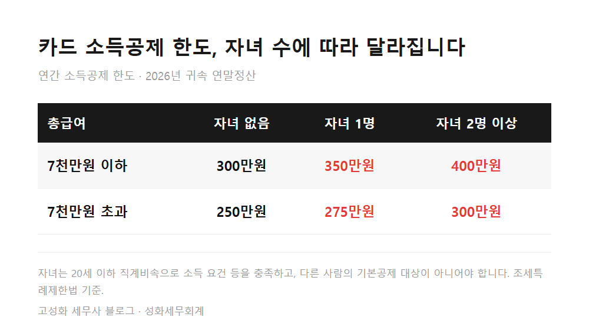
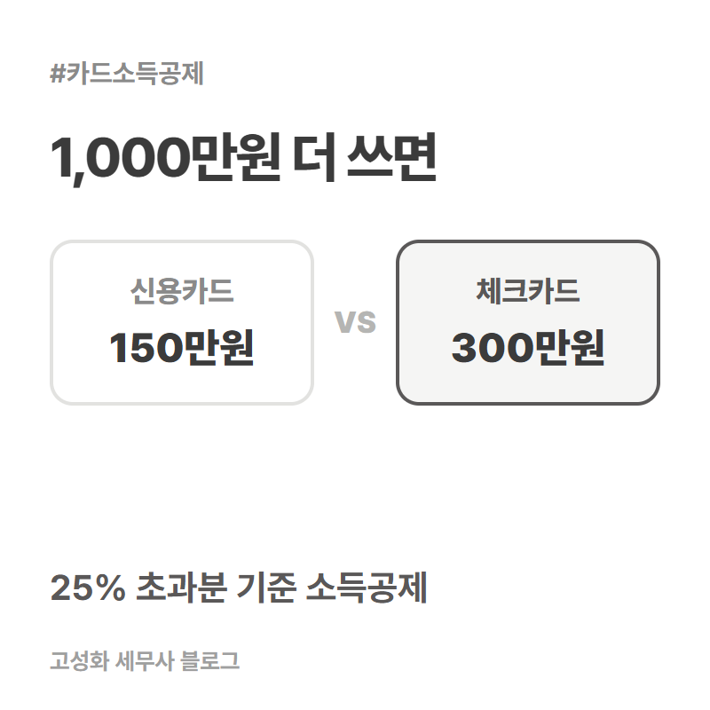
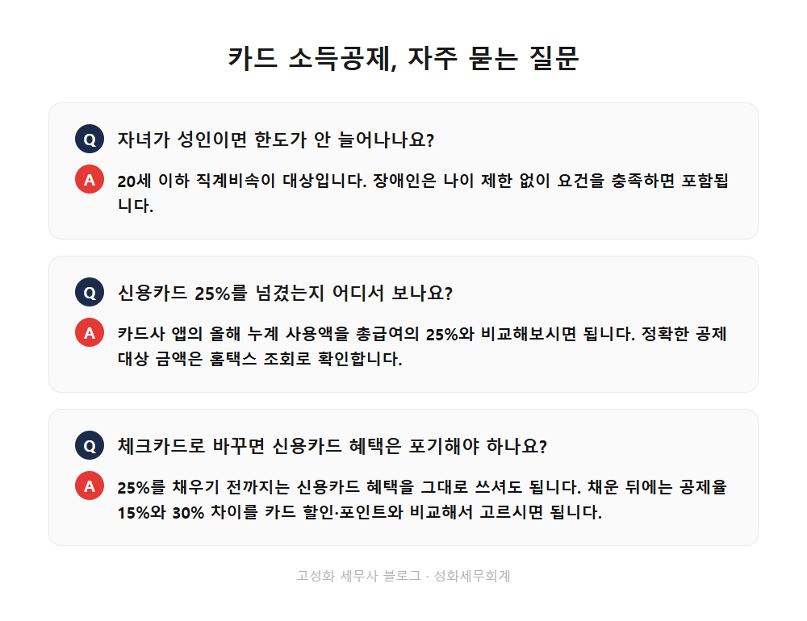

2026 카드 소득공제 자녀 한도 350만원 400만원 확대

연말정산 이야기는 늘 1월에 시작하지만, 카드 공제만큼은 10월 전에 계산해보셔야 손에 남는 게 있습니다. 결제수단을 바꿀 시간이 아직 석 달 남아 있기 때문입니다.
저는 세금 이야기를 할 때 "얼마 아끼세요"보다 "어디까지 되는지"를 먼저 말씀드리는 편입니다. 이 글의 기준도 법제처 법령 원문에서 다시 확인한 것만 적었습니다.
올해부터 자녀가 있는 근로자는 신용카드 소득공제 한도가 늘었습니다. 총급여 7천만원 이하 기준으로 300만원이 상한이었는데, 자녀 수에 따라 350만원, 400만원까지 올라갑니다.
다만 한도가 늘었다고 공제받는 금액이 저절로 늘어나는 건 아닙니다. 이 차이가 제일 헷갈리는 부분입니다.
- 카드 소득공제 한도, 자녀가 있으면 얼마까지 늘었나
- 4분기, 체크카드로 바꾸면 얼마나 달라지나
- 카드 공제에서 빠지는 결제와 가족 합산 기준
한눈에 보기



자주 묻는 질문
자녀가 성인이면 한도가 안 늘어나나요?
20세 이하 직계비속이 대상입니다. 장애인은 나이 제한 없이 요건을 충족하면 포함됩니다.
신용카드 25%를 넘겼는지 어디서 보나요?
카드사 앱의 올해 누계 사용액을 총급여의 25%와 비교해보시면 됩니다. 정확한 공제 대상 금액은 홈택스 조회로 확인합니다.
체크카드로 바꾸면 신용카드 혜택은 포기해야 하나요?
25%를 채우기 전까지는 신용카드 혜택을 그대로 쓰셔도 됩니다. 채운 뒤에는 공제율 15%와 30% 차이를 카드 할인·포인트와 비교해서 고르시면 됩니다.
정리하면
올해부터 자녀가 있으면 카드 소득공제 한도가 350만원, 400만원까지 늘었고, 25%를 넘긴 뒤에는 체크카드와 현금영수증이 신용카드보다 공제율이 두 배입니다.
1분기부터 신용카드로만 결제해오셔서 이미 늦은 것 같다고 느끼실 수 있습니다. 하지만 카드 공제는 연말까지 쓴 금액이 기준이라, 남은 석 달의 결제수단만 바꿔도 차이가 납니다.
총급여와 올해 카드 사용액만 알려주시면 어느 쪽이 나은지 같이 계산해드립니다. 편하게 문의 주세요.
본문 전체와 근거 조문은 블로그에서 확인하실 수 있습니다.